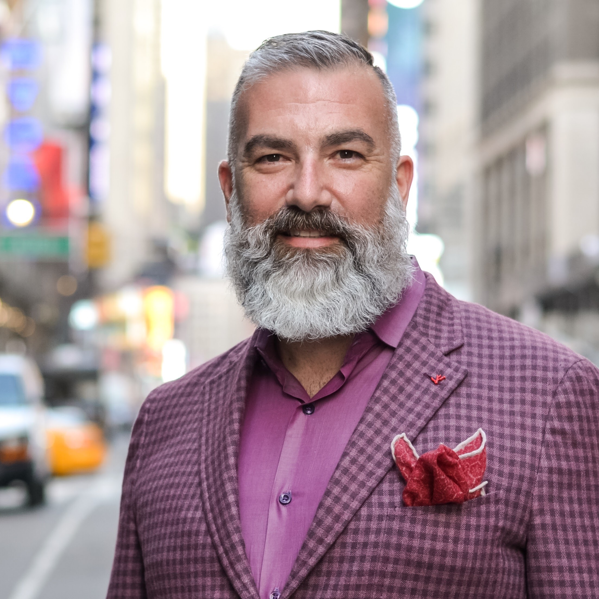

Authenticity
Real, memorable travel starts with places and experiences that feel deeply human and grounded in their surroundings.
Founder story

About me
Steve Cerqua is a passionate traveler, lifestyle curator, and outdoor enthusiast with a love for experiences that feel both authentic and elevated. For him, travel is not simply about checking off destinations—it is about connection, immersion, and the emotional resonance that comes from stepping into a place with curiosity and openness.
His fascination with glamping grew from the belief that the best travel experiences are the ones that balance beauty with meaningful presence. Whether it is a quiet sunrise in the woods, a moonlit campfire, or a thoughtfully designed stay that offers comfort without sacrificing the magic of the outdoors, Steve believes these experiences have the power to broaden perspective and deepen appreciation for the natural world.
Through Green Acres Glamping, Steve curates journeys that invite guests to disconnect from routine and reconnect with something bigger—nature, culture, and the kind of personal growth that happens when you step outside your comfort zone.
What guides the vision
Real, memorable travel starts with places and experiences that feel deeply human and grounded in their surroundings.
From sunrise views to elegant interiors, every detail matters when creating a place that feels special.
Travel should cultivate a stronger bond with nature, culture, and the people and moments that shape us.